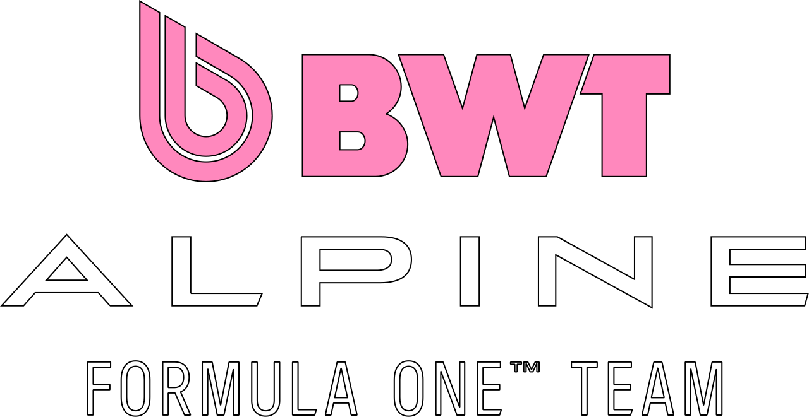
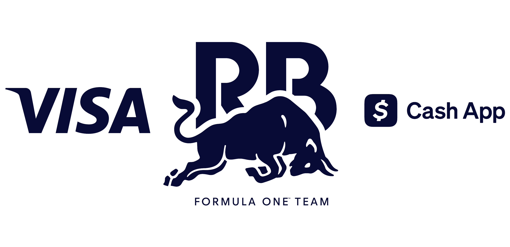
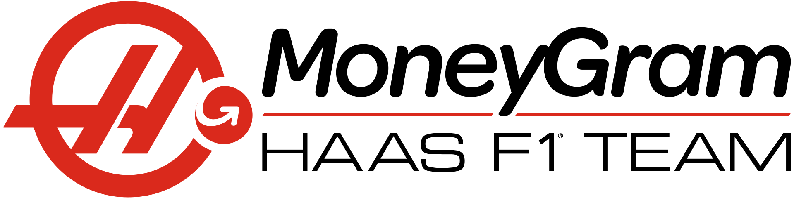
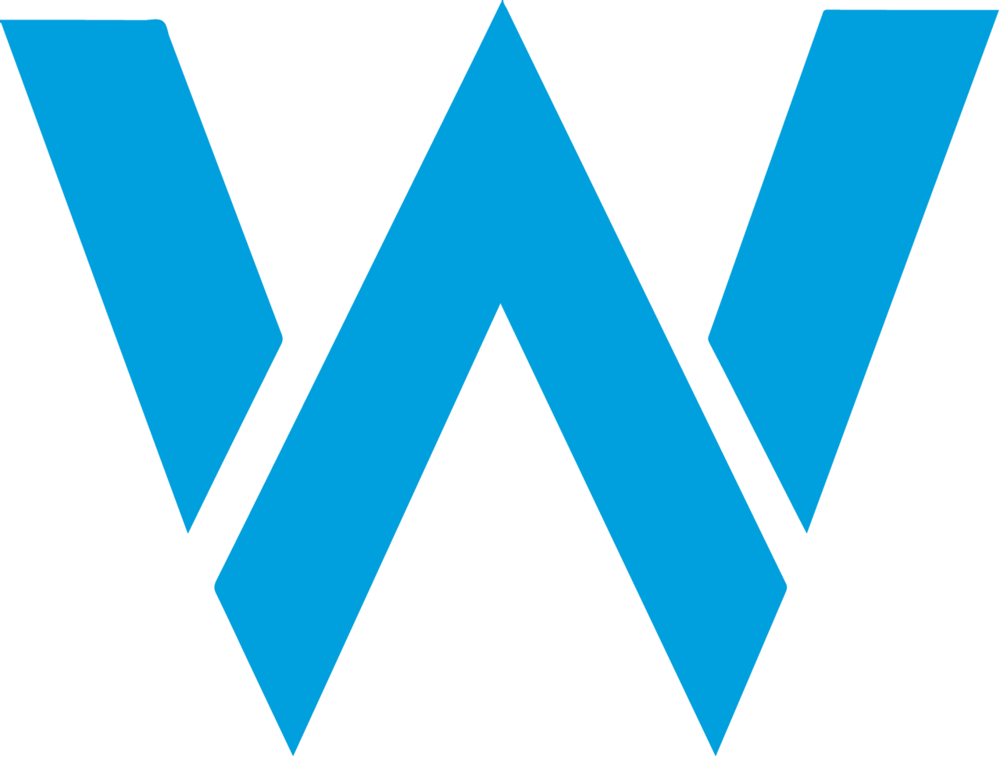

Mercedes-AMG Petronas
A Mercedes-Benz , a Mercedes-Benz Csoport német autómárkája , 1954 óta különböző időszakokban csapattulajdonosként és motorgyártóként is részt vesz a Forma-1- ben. A jelenlegi Mercedes-Benz Grand Prix Limited , amely Mercedes-AMG Petronas Formula One Team néven versenyez , székhelye az angliai Brackley- ben található , [ 6 ] és német versenylicenccel rendelkezik . [ 7 ] 2020 decemberében bejelentették, hogy az Ineos egyharmados, egyenlő részesedést kíván szerezni a Mercedes-Benz Csoporttal és a Toto Wolffal együtt ; [ 8 ] ez 2022. január 25-én lépett hatályba. [ 9 ] A Mercedes márkájú csapatokat gyakran az " Ezüst Nyilak " ( németül : Silberpfeile ) becenévvel illetik . A második világháború előtt a Mercedes-Benz az Európa-bajnokságon versenyzett , és három címet nyert. A márka 1954 -ben debütált a Formula–1-ben . Miután megnyerte első futamát az 1954-es Francia Nagydíjon , Juan Manuel Fangio további három nagydíjat nyert, ezzel megnyerve az 1954-es egyéni bajnokságot, és ezt a sikert 1955- ben megismételte. Annak ellenére, hogy két egyéni bajnokságot nyert, a Mercedes-Benz 1955 után kivonult az autóversenyzésből az 1955-ös Le Mans-i katasztrófára válaszul . A Mercedes 1994 -ben tért vissza a Forma-1-be motorgyártóként az Ilmorral , egy brit független, nagy teljesítményű autósport-mérnöki céggel együttműködve, amely fejlesztette a motorjaikat. A cég egy konstruktőri és három egyéni címet nyert a McLarennel kötött, 2009-ig tartó együttműködés keretében. 2005-ben az Ilmort Mercedes AMG High Performance Powertrains névre keresztelték át . 2010- ben a cég megvásárolta a Brawn GP csapatot, és Mercedesre nevezte át. A 2014-es jelentős szabályváltoztatás óta, amely turbófeltöltők és hibrid elektromos motorok használatát írta elő , a Mercedes a Forma-1 történetének egyik legsikeresebb csapatává vált, 2014 és 2020 között hét egymást követő egyéni, 2014 és 2021 között pedig nyolc egymást követő konstruktőri címet nyert – mindkét rekord. A gyártó több mint 200 győzelmet szerzett motorbeszállítóként, és a második helyen áll a Forma-1 történetében. Tizenkét konstruktőri és tizennégy egyéni bajnokságot nyertek Mercedes-Benz motorokkal.

Scuderia Ferrari
A Scuderia Ferrari olasz Formula–1-es versenycsapat, a sportág eddigi legsikeresebbje, a világbajnokság kezdete, 1950 óta jelen van a Formula–1-ben. Enzo Ferrari alapította 1929-ben (a Scuderia olaszul istállót jelent, a Ferrari az alapító Enzo Ferrari nevére utal), és 1939-ig az Alfa Romeo autóit versenyeztette. Csak később kezdtek saját autókat készíteni. A 2019-es szezonban a versenyzők a négyszeres világbajnok Sebastian Vettel, aki 2015 óta van a csapatnál, és a Saubertől érkező Charles Leclerc, aki Kimi Räikkönent váltotta. Maurizio Arriavebenét pedig, aki 2015 és 2018 közt volt csapatfőnök, Mattia Binotto váltotta. 2023-tól Frédéric Vasseur irányítja a csapatot Binotto helyett.2007-ben megnyerték az egyéni (Räikkönen) és a konstruktőri bajnoki címet is. Utóbbit 2008-ban megvédték, az egyéni címről viszont Felipe Massa a zárófutam utolsó körében lecsúszott. 2010-ben Fernando Alonso volt harcban a bajnoki címért, listavezetőként várta az utolsó versenyt, de a futam nem sikerült, így alulmaradt a Red Bull Racingnél versenyző Vettellel szemben. 2012-ben Alonso ismét a zárófutamig volt esélyes a címre, de ezúttal is Vettel nyerte a bajnokságot. 2014-ben gyenge szezont zárt a csapat, 1993 óta első ízben fordult elő, hogy egész évben nem sikerült futamot nyerniük. 2015-ben Vettel révén három futamot nyertek, a konstruktőri világbajnokságban második helyen zártak a Mercedes mögött. 2016-ban viszont megint nem tudtak futamgyőzelmet elérni, a konstruktőrök között visszacsúsztak a harmadik helyre a Red Bull mögé. 2017-ben a Ferrari a megelőző évekhez képest versenyképesebbnek bizonyult, Vettel sokáig esélyesnek tűnt a Mercedesszel szemben, de a szezon későbbi szakaszában túl sok pontot vesztett, ami miatt elszálltak a világbajnoki reményei. A 2018-as szezont még biztatóbban kezdte a Ferrari, de az év későbbi szakaszában ismét többször hibázott Vettel és a csapat, így ezúttal sem sikerült a világbajnoki cím megszerzése. 2019-ben a motort szabálytalannak minősítették, így 2020-ban jelentősen hátra csúsztak a mezőnyben. 2025-től a csapat pilótái: Lewis Hamilton és Charles Leclerc. A csapat legsikeresebb versenyzője a hétszeres világbajnok Michael Schumacher, aki öt egyéni bajnoki címet szerzett a Ferrarinak az összes tizenötből.

Red Bull Racing
A Red Bull Racing a Red Bull energiaital-gyár tulajdonában álló, osztrák Formula–1-es csapat. A cég másik csapata a RB Formula One Team (korábban Scuderia AlphaTauri). A csapat 2005-ben debütált az ausztrál nagydíjon. Jelenleg osztrák licensszel versenyeznek. 2010-2013 között négy egyéni és konstruktőri világbajnoki címet is nyertek Sebastian Vettellel. A 2014-től kezdődő turbókorszakban teljesítményük visszább esett, de végig ott voltak a legjobb három csapat között (kivétel 2015). 2021-ben és 2022-ben illetve 2023-ban Max Verstappen révén megszerezték az hetedik egyéni bajnoki címüket. 2013 után, 2022-ben és 2023-ban ismét világbajnok a csapat. Jelenlegi pilótafelállásukat a holland Max Verstappen, és a mexikói Sergio Pérez alkotja. 2025-től Pérez helyét Liam Lawson váltja, akit két forduló után Cunoda Júki követett a pilótaülésben. A csapat 2005-ben Cosworth, 2006-ban Ferrari, 2007–2018 között Renault, 2019–2021 között Honda, 2022-től pedig a saját gyártású Red Bull motorokkal versenyez. 2026-tól a Ford fogja ellátni motorokkal a csapatot. A csapat közvetlen jogelődjének az 1997-ben alapított Stewart Grand Prix nevezhető, melyet Jackie Stewart alapított. 1999 végén aztán eladta azt a Ford Motor Company-nek, ami Jaguar Racing néven versenyeztette. 2004-ben aztán a Ford úgy döntött, hogy eladja a sikertelen, de költséges csapatot. Azt Dietrich Mateschitz, a Red Bull energiaital-gyártó vállalat tulajdonosa vásárolta meg. A csapat így a 2005-ös ausztrál nagydíjon a Jaguar jogutódjaként ott állhatott a rajtvonalnál, immár a Red Bull energiaitalok kék-ezüst színeiben. A Red Bullnak nem volt ismeretlen az autósport királykategóriája, hiszen korábban szponzorként logójuk megtalálható volt a Sauber, az Arrows, valamint a jogelőd Jaguar autóin is. Miután saját csapatot indított, a Red Bull természetesen felbontotta a szerződését a Sauberrel (az Arrows már 2002-ben megszűnt). Az italgyártó cég emellett a Formula–3000-es versenysorozatban, és ennek utódjában, a GP2-ben is feltűnt, valamint van egy európai tehetségkutató-programja Red Bull Junior Team néven. Későbbi Formula–1-es versenyzők is kerültek ki a program növendékei közül; Enrique Bernoldi, Christian Klien, Patrick Friesacher, Vitantonio Liuzzi és Scott Speed is versenyzett már a királykategóriában.

McLaren
A McLaren Formula–1-es csapatot az új-zélandi Bruce McLaren alapította Bruce McLaren Motor Racing néven, saját maga versenyeztetésére. A csapat 1966-ban, a monacói nagydíjon debütált. Az alapító halála (1970) után Teddy Mayer vitte tovább az istállót, majd 1980 végén Ron Dennis vezetésével létrejött a McLaren International. A Formula–1 második legsikeresebb csapata 12 egyéni és kilenc konstruktőr-világbajnoki címével a Ferrari mögött. Legsikeresebb versenyzői Alain Prost és Ayrton Senna, akik három-három világbajnokságot nyertek a csapat színeiben. A csapat a Formula–1 mellett részt vett már az indianapolisi 500-ban és a Le Mans-i 24 órás autóversenyen is. 2009-ben az addig vezető pozíciót betöltő Ron Dennis visszavonult, helyét Martin Whitmarsh vette át. A 2013-as pocsék évet követően azonban Whitmarsht elbocsátották, helyére pedig ismét Ron Dennis került. 2015-től 2017-ig a csapat Honda-motorokat használt egy kizárólagos megállapodás keretein belül, 2016-ban pedig új tulajdonosi kör kezébe került a csapat, akik eltávolították Ron Dennist, a helyére pedig a csapatfőnöki tisztet betöltő Éric Boullier mellé igazgatóként Zak Brown érkezett. Jelenleg a McLaren motorpartnere a Mercedes. A pilótapárosukat Lando Norris és Oscar Piastri alkotja. Az első McLaren versenyautó a McLaren M1A volt 1964-ből. A Bruce McLaren Motor Racinget 1963-ban alapította az új-Zélandi Bruce McLaren, aki eredetileg sportautókat épített. A csapat 1966-ban debütált a Formula–1-ben, a monacói nagydíjon. A kezdeti motorbeszállító a Ford volt. A csapatnak első két szezonjában csak egy versenyzője volt, maga az alapító Bruce McLaren, aki az első versenyen olajszivárgás miatt kiesett. Legközelebb csak az amerikai nagydíjon vett részt, ahol azonban új motorral, a Serenissimával indult. A versenyen ötödik helyével a McLaren első pontjait szerezte. Az első szezonban a csapat két ponttal a kilencedik lett. Bruce McLaren 1969-ben a Nürburgringe. 1967-re a csapat új motorbeszállítója a BRM lett. McLaren az évben egyszer lett negyedik a monacói nagydíjon, és egyszer hetedik. A többi nagydíjon kiesett. A McLaren csapat három ponttal a tizedik lett a konstruktőri bajnokságban. 1968-ra Bruce McLaren csapattársa az előző évi világbajnok Denny Hulme lett, aki 1974-ig a csapat versenyzője maradt. A csapat ebben az évben visszatért a Ford-Cosworth motorokhoz, melyeket egészen 1983-ig használt. Hulme megnyerte az Olasz és a kanadai nagydíjat, míg McLaren a belga nagydíjat nyerte meg, amely a csapat első futamgyőzelme volt. Bruce emellett megnyerte az az évi Race of Champions-t, melyet Brands Hatchban rendeztek. A csapat 1968-tól több kiscsapatnak adott kasztnit. 1969-ben Bruce három dobogós helyével és 26 pontjával a harmadik helyen zárt az egyéni világbajnokságban. A csapat ötödik győzelmét azonban Hulme szerezte a mexikói nagydíjon. A csapat a negyedik helyen zárt a konstruktőri bajnokságban.

Aston Martin F1
Az Aston Martin először a DBR4-el, az első nyitott kerekű versenyautójával lépett be a Forma–1-be. A DBR4-et először 1957-ben építették és tesztelték, de csak 1959-ben debütált a Forma–1-ben. Ezt a késést az okozta, hogy a vállalat a DBR1-es sportautó fejlesztését helyezte előtérbe, amely végül megnyerte az 1959-es 24 órás Le Mans-i versenyt. A DBR4 világbajnoki debütálására a holland nagydíjon már elavulttá vált, és küzdött a tempóért versenytársaival szemben, Carroll Shelby és Roy Salvadori pedig a 10., illetve a 13. helyen végzett a 15-ből. Salvadori a korai körökben motorhiba miatt kiállt a versenyből, és Shelby autója is ugyanerre a sorsra jutott a verseny későbbi szakaszában. A csapat következő nevezése a brit nagydíjon érkezett, ahol Salvadori meglepett a kvalifikációval a 2. helyen. A verseny elején Shelby egyik gyújtásmágnese meghibásodott, ami rontott autója tempójában. A második elektromágnes a verseny végén meghibásodott, ami miatt feladta a versenyt. Salvadori csak a 6. helyet tudta megtartani, kevéssel a pontszerzéstől. A portugál nagydíjon mindkét autó elkerülte a problémákat, és a 6. és a 8. helyen végzett, de még mindig nem szereztek pontot. Az Aston Martin a szezon utolsó nevezése az olasz nagydíj volt, ahol mindkét autó tovább küzdött, és csak a 17. és a 19. helyen végzett. A verseny során Salvadori egészen a 7. helyen futott, mielőtt motorhibát szenvedett, míg Shelby a 10. helyen ért célba. Az autó jelentősen elavult volt a riválisaitól, és nem szerzett pontot. Az Aston Martin megépítette a DBR5-öt, hogy versenyezzen az 1960-as szezonban. A DBR5 az elődjén alapult, de könnyebb volt, és független felfüggesztéssel rendelkezett. Azonban az autó elöl nehéz motorral rendelkezett, és rendszeresen felülmúlták a hétköznapibb hátsó motoros autókat. A csapat idénybeli első nevezése a holland nagydíjon érkezett, de a DBR5 még nem állt készen a versenyre. Ennek eredményeként csak Salvadori indult a versenyen, a tartalék DBR4-gyel. Csak a 18. helyet szerezhette meg. Annak ellenére, hogy engedélyezték neki a versenyt, az Aston Martinnak azt mondták a versenyszervezők, hogy nem fizetnek. A csapat ezért nem volt hajlandó elindulni a versenyen. A DBR5-ösök készen álltak a csapat következő versenyére Nagy-Britanniában, amelyen Salvadori és Maurice Trintignant is részt vett. Salvadori kormányproblémákkal vonult vissza, Trintignant pedig csak a 11. helyen tudott célba érni, öt körrel lemaradva az éllovastól. A gyenge eredmények sorozatát követően, amikor a csapat egyetlen bajnoki pontot sem szerzett, az Aston Martin a brit nagydíj után teljesen felhagyott a Forma–1-gyel.

Alpine F1 Team
Az Alpine Racing Limited [ 12 ] ( / ˈælpɪn / ) , amely jelenleg szponzorációs okokból BWT Alpine Formula One Team néven versenyez , [ 13 ] az a név , amely alatt az enstone- i székhelyű Formula–1-es csapat a 2021-es Formula–1-es világbajnokság kezdete óta versenyez . [ 14 ] A korábban Renault F1 Team néven futó, a francia Groupe Renault autóipari vállalat , valamint a Renault–Nissan–Mitsubishi Alliance tulajdonában lévő csapatot 2021-re átnevezték, hogy népszerűsítsék a Renault sportautó-márkáját, az Alpine-t , és továbbra is a Renault gyári csapataként szolgált . [ 15 ] Ezt a pozíciót a csapat egészen 2025 végéig megtartotta a Formula–1-ből (mint motorgyártó). [ 16 ] A csapat jelenleg Mercedes motorokat használ, korábban 2015-ben Lotus néven. A csapat székhelye az angliai Oxfordshire megyei Enstone -ban található, és francia licenccel versenyez . [ 17 ] A csapat jelenleg Pierre Gasly-t és Franco Colapinto-t futtatja teljes munkaidős pilótaként. Jelenlegi formájában, Alpine néven, a csapat egyetlen győzelmét Esteban Ocon szerezte a 2021-es Magyar Nagydíjon.A csapatnak hosszú története van, először 1981- ben versenyzett a Forma-1-ben Toleman néven , amikor a csapat székhelye az angliai Witney -ben volt. [ 18 ] 1986 -ban , miután a Benetton Group felvásárolta , átnevezték és Benetton néven versenyzett . Benetton néven megnyerte az 1995-ös konstruktőri bajnokságot, pilótája, Michael Schumacher pedig két egyéni bajnokságot nyert 1994- ben és 1995-ben . [ 19 ] Az 1992-es szezon előtt jelenlegi helyére , az Egyesült Királyságbeli Enstone- ba költözött . [ 20 ]. A 2000-es szezonra a Renault (először) megvásárolta a csapatot, a 2002-es szezonra pedig a neve Renault F1 Team -re változott , és a csapat Renault néven versenyzett. [ 21 ] A Renault 2005 -ben és 2006- ban megnyerte a konstruktőri bajnokságot, pilótája, Fernando Alonso pedig ugyanebben a két évben a pilótabajnokságot is. [ 22 ] 2011- ben a Lotus Cars szponzorként csatlakozott, és a csapat neve Lotus Renault GP- re változott , bár abban a szezonban továbbra is csak "Renault" néven versenyzett. [ 23 ] 2012-re a Genii Capital többségi részesedéssel rendelkezett a csapatban, és 2012-től 2015-ig a csapat neve Lotus F1 Team volt , márkapartnere után, és "Lotus" néven versenyzett. 2015 végén a Renault másodszor is átvette a csapatot, és átnevezte Renault Sport Formula One Team -re . [ 24 ] [ 25 ] A csapat 2016- tól ismét "Renault" néven versenyzett, és így is maradt a 2020-as szezon végéig . [ 26 ] Amikor a szervezet egészének történetéről beszélünk, nem pedig az általa működtetett egyes konstruktőrök történetéről, általában a " Team Enstone " köznyelvi kifejezést használjuk. [ 27 ] [ 28 ] [ 29 ] A csapat egy 17 000 m2 -es (180 000 négyzetláb) létesítményben működik egy 17 hektáros (6,9 ha) területen Enstone-ban. [ 30 ] 2023 májusára az Alpine-nak körülbelül 1000 alkalmazottja volt Enstone-ban és 350-en Viry-Châtillonban . [ 31 ] [ 32 ]

Audi F1 Team
A mai modern Audi cég soha nem vett részt a Grand Prix versenyeken, elődje az Auto Union 1935 és 1939 között versenyzett a Grand Prix versenyeken, még az 1950-es Formula–1 világbajnokság kezdete előtt.[5] A kor legmodernebb technológiai újításaival készültek.[6] A 2022-es Formula–1-es belga nagydíjon az Audi AG bejelentette, hogy a 2026-os szezontól kezdődően saját erőforrással száll be a Formula–1-be.[7][8][9] Októberben az Audi megerősítette partnerségét a Sauber Motorsporttal a 2026-os évre, részesedést szerezve a vállalatban, hogy a német márka a csapat átnevezésével és a motorok szállításával beléphessen a Formula–1-be.[10][11] 2023 júniusában a svájci Neel Janit a csapat szimulátoros pilótájaként szerződtették, aki korábban a Scuderia Toro Rosso tesztpilótája is volt.[12][13]. 2024 márciusában a jelentette be a német autógyár, hogy az eredeti tervvel ellentétben nem 75%-át veszi át a vállalatnak, és Finn Rausing eddigi tulajdonos is részvényes marad, hanem kizárólagos tulajdonosa lesz a Sauber-istállónak és az azt működtető Sauber-csoportnak.[14] Ezek mellett átszervezés is történt, Oliver Hoffmant, aki eddig az Audi cég fejlesztési részlegének vezetője volt, a teljes Formula–1-es Audi-program, illetve az átvett Sauber-csoport élére nevezték ki. Andreas Seidl a csapat ügyvezető igazgatója lett és a versenyistálló működtetéséért felelős személye.[15] 2024 áprilisában hivatalosan is bejelentették, hogy 2025-től a Stake F1 Team Kick Sauber leszerződtette Nico Hülkenberget három szezonra.[16] Június elején szerződtették Stefano Sordót az újonnan létrehozott teljesítményigazgatói posztra, a technikai részleg élére pedig James Key-t nevezték ki, míg Stefano Battiston a kereskedelmi stratégiáért fog felelni.[17][18] Július elején Adam Baker sportigazgató bejelentette, hogy az Audi erőforrásai már a tesztpadon futnak.[19] A hónap végén a Sauber bejelentette, hogy Mattia Binotto operatív és műszaki igazgatóként csatlakozik a projekthez, az eddigi vezérigazgató, Andreas Seidl pedig távozik posztjáról, csakúgy mint a projektvezetőként dolgozó Oliver Hoffmann.[20] Július 15-én exkluzív partneri megállapodást kötöttek a BP-vel és a Castrollal.[21] A technológiai együttműködésen túl a felek szponzori megállapodást is kötöttek. Marketingfronton is együttműködik az Audi, a BP, a Castrol és BP németországi vezető márkája, az Aral. Augusztus 1-jén hivatalossá vált, hogy a 2026-os szezontól kezdődően csapat csapatvezetője Jonathan Wheatley lesz.[22][23] November 6-án Gabriel Bortoletót szerződtették Hülkenberg csapattársának.[24] A hónap végén kisebbségi részesedést vásárolt a csapatban a Katar Állami Befektetési Alap (QIA).[25][26] 2025 májusában a Mecachrome bejelentette, hogy az Audi partnereként folytatja és számos alkatrész gyártásában támogatja a vállalatot.[27] Július 1-jén a Sauber megnyitotta vadonatúj angliai központját az Oxfordshire-ben található Bicesterben, ami a Formula-1 Szilícium-völgyének számító régió.[3][4] Július 30-án az Audi bejelentette, hogy többéves szerződést írt alá a brit Revolut céggel, amely a csapat névadó szponzora lesz.[28] Szeptember 10-én hosszú távú szerződést kötöttek a német sportruházati céggel, az Adidasszal, amely a Mercedes szponzora is.[29][30] November 12-én koncepcióautón leleplezték le azt a dizájnt és színvilágot, amit majd debütálásukkor az Audi R26-on használnak.[31] November 29-én bejelentették, hogy kiemelt partnerként csatlakozik a közel-keleti olajállam turisztikai ügynöksége a Visit Qatar az istállóhoz.[32] December 15-én jelentették be, hogy a csapat hivatalos neve az Audi Revolut F1 Team lesz, autójuk bemutatójára pedig 2026. január 20-án, Berlinben lesz.[33] Január 23-án Allan McNisht nevezték ki a pilótaprogramjuk élére.[34]A 2026-os ausztrál nagydíjon mutatkoztak be az R26-ossal, amelyet az új alváz- és motorszabályozásoknak megfelelően terveztek.[35] Gabriel Bortoleto és Nico Hülkenberg a 10., illetve a 11. helyen kvalifikálta magát, megelőzve olyan neves csapatokat, mint a Haas, az Alpine és a Williams. Az edzés közben több kisebb műszaki hiba is hátráltatta a csapatott.[36] A futamon Hülkenberg egy motorhiba miatt nem tudott felállni a rajtrácsra, míg brazil csapattársa 9. helyen ért célba, két pontot gyűjtve az Audi első versenyén, ami történelmi pillanat volt a gyártó számára, mivel ezek voltak az első pontjaik a Formula–1-ben.[37]

Visa Cash App Racing Bulls F1 Team
A Racing Bulls S.p.A., hivatalos nevén Visa Cash App Racing Bulls F1 Team, röviden RB vagy VCARB egy 2024-ben alapított faenzai székhelyű olasz Formula–1-es csapat, a Scuderia AlphaTauri jogutódja. Hasonlóan elődeihez, a Toro Rossóhoz és az AlphaTaurihoz, az RB a Red Bull fiókcsapata. A Scuderia AlphaTauri 2020-2023 között indult a Formula–1-ben. 2023-ban bejelentették, hogy az AlphaTauri nevet változtat, és a csapat oszlopos tagja, Franz Tost, otthagyja a csapatot. A hivatalos 2024-es nevezési listán eredetileg Scuderia RB néven szerepelt a csapat, A csapat autói által használt motorokat a Honda és a Red Bull Powertrains együttműködésével tervezték. Ez alatt az együttműködés alatt készültek az AlphaTauri, valamint a Red Bull autóinak motorjai is. 2024. január 25-én bejelentették a csapat új hivatalos nevét: Visa Cash App RB, röviden VCARB. 2025-től Racing Bulls néven indulnak, az RB helyett. A csapat pilótái Arvid Lindblad és Liam Lawson. A csapat menedzsere Graham Watson, míg a csapatfőnök Alan Permane. A Racing Bulls SpA , amely Visa Cash App Racing Bulls Formula One Team néven versenyez (rövidítve Racing Bulls [ 8 ] vagy VCARB ), egy olasz Formula–1-es versenycsapat és konstruktőr , amely a 2024-es szezon óta versenyez . A csapat az osztrák Red Bull GmbH konglomerátum tulajdonában lévő két Formula–1-es konstruktőr egyike , a másik a Red Bull Racing . A csapat székhelye Faenzában található , és Milton Keynesben is van egy bázisa a testvércsapatához közel. [ 9 ] A 2006 és 2019 között Scuderia Toro Rosso , 2020 és 2023 között Scuderia AlphaTauri néven ismert csapat a 2024-es szezonban RB -re váltott, [ 10 ] majd 2025-ben Racing Bullsra váltott. [ 11 ] [ 12 ] A jelenlegi vezérigazgató Peter Bayer, a csapatfőnök pedig Alan Permane . A 2024-es szezon elején a csapat megtartotta a korábbi AlphaTauri pilótákat, Daniel Ricciardót [ a ] és Yuki Tsunodát ; Ricciardót a 2024-es Szingapúri Nagydíj után menesztették , és helyére a Red Bull junior és tartalék pilótája, Liam Lawson került . [ b ] Lawsont 2025-re a Red Bull főcsapatába léptették elő, helyét a Racing Bullsnál a Formula–2-es végzettségű Isack Hadjar vette át. Lawsont ezt követően két futam után kihagyták a Red Bull csapatából, és visszatért a Racing Bullshoz, Tsunodát pedig a senior csapatba léptették elő. A csapat a 2025 -ös Holland Nagydíjon szerezte meg első dobogós helyezését Racing Bullsként .

Haas F1 Team
A Haas F1 Team, jelenleg MoneyGram Haas F1 Team, egy amerikai Formula–1-es csapat, amely 2016-tól szerepel a sorozatban. Az istálló alapítója az amerikai üzletember, Gene Haas, aki a NASCAR-ban az egyik csapat társtulajdonosa. A csapat jelenlegi főszponzora a MoneyGram. A bemutatkozó versenyen Romain Grosjean a pontszerző hatodik helyen végzett. A konstruktőrök értékelését a csapat a bemutatkozó évben a 8. helyen zárta. Eddigi legjobb szezonjuk a 2018-as volt, amikor 5. helyen végeztek a konstruktőrök között. Jelenlegi párosuk Esteban Ocon és Oliver Bearman. 2014 januárjában bejelentette az amerikai NASCAR sorozatban is egy csapatot tulajdonló Gene Haas, hogy beadta licenckérelmét a Nemzetközi Automobil Szövetségnek a 2015-ös Formula–1-es szezonban való indulásra. Áprilisban kiderült, hogy az engedélyt megkapta az amerikai, ám egy hónappal később a sajtó nyilvánosságára hozta, hogy csapata debütálása 2016-ra fog tolódni. Az év végén csődbe menő Marussia elárverezése után a Haas megszerezte a csapat Banbury központját, megszerezte magának a Ferrari motorokat, kasztnijuk megépítőjének pedig megnyerték maguknak a neves olasz gyártót, a Dallarát.[1] Eldőlt az is, hogy a Jaguar Racing, valamint a Red Bull Racing korábbi technikai igazgatójával, Günther Steinerrel egy, a Formula–1-ben már tapasztalt szakember foglalja el a csapatvezetői posztot, míg autóikba a 2015-ös év végén a Lotus sikertelenségéből kiábránduló Romain Grosjean és a ferraris kapcsolatok révén Esteban Gutiérrez ül majd. Ezzel ellentétben a Haas megközelítését kritizálták a kisebb, saját költségvetéssel rendelkező privát csapatok, és aggodalmukat fejezték ki a gyártók és a kiscsapatok közötti szoros kapcsolatok miatt. A Haas megítélése a Ferrarival folytatott széleskörű partnerség miatt vegyes fogadtatásban részesült. A csapat örömmel fogadta az úttörő, alacsony költségű megoldást, amely lehetővé tette az új csapatok Formula–1-be való bejutását és versenyképességét, ami a sport számára létfontosságú volt a HRT és a Caterham, valamint a későbbi Manor csődje után.

Williams Racing
A Williams Grand Prix Engineering (jelenlegi nevezési nevén Williams Racing) egy brit Formula–1-es versenycsapat. Frank Williams és Patrick Head alapította 1977-ben (történetileg a csapat előzményének tekinthető az 1969-től 1976-ig működő Frank Williams Racing Cars). 7 egyéni és 9 konstruktőri világbajnoki címével a Formula–1 egyik legsikeresebb csapata.[1] Egyéni és konstruktőri világbajnoki címet utoljára 1997-ben, futamot 2012-ben nyertek. A Williams volt a Formula–1 történetében az utolsó igazi magáncsapat, egészen 2020-ig, amikor megvásárolta őket az amerikai Dorlinton Capital. Legnagyobb sikereiket a Renault partnereként érték el. A 2014-es szezontól kezdve Mercedes-motorokat használnak. A csapatnál versenyeztek az alábbi világbajnokok: Alan Jones, Keke és Nico Rosberg, Nigel Mansell, Damon Hill, Jenson Button, Alain Prost, Nelson Piquet, Ayrton Senna és Jacques Villeneuve. Senna, Button, és Nico Rosberg kivételével mindannyian a csapattal nyertek egy egyéni címet. A Williams híres volt arról, hogy világbajnok pilótái nem náluk próbálták megvédeni a címüket, csak Alan Jones, Keke Rosberg és Villeneuve maradtak a csapatnál azt követően. A Williams a Williams Advanced Engineering és a Williams Hybrid Power útján a fejlesztések terén is jelen volt: Formula–1-es technológiákat alakítottak át a mindennapi használatra. 2017-ben "Williams" címmel egy filmet is bemutattak, mely a csapat alapítójának életútjába enged mélyebb betekintést. Frank Williams fiatal kora óta szenvedélyes rajongója volt a motorsportoknak, a hatvanas években ő maga is versenyzett egy rövid ideig, ezt követően pedig inkább más versenyzőket próbált versenyüléshez juttatni. 1968-ban akkori szobatársát, Piers Courage-t indította a Formula–2-es sorozatban, melyben ebben és a rákövetkező évben szép sikereket értek el. Ezzel felhívták magukra az olasz sportautó-tervező, De Tomaso figyelmét aki az 1970-es szezonra a rendelkezésére bocsátott egy Formula–1-es kasztnit, amit a Dallara tervezett. Az autó versenyképtelen és meghibásodásra hajlamos volt, ráadásul a szezon ötödik versenyén, a Holland Nagydíjon kigyulladt, Courage pedig az autóban lelte halálát. Ez rendkívül megviselte Williams-t, de a csapat tovább folytatta az idényt. Miután eredmények nem születtek, De Tomaso szerződést bontott. 1971-ben már az akkor egy éves March 701-es kasztnival nevezett be Frank Williams Racing Cars nevű csapatával. Szerény eredményeket értek el, és a pénzhiány miatt máról a holnapra működtek. 1972-ben is maradtak a March kasztninál, a szponzorok megjelenésével pedig már egy jobb autóra futotta, mint eddig. 1973-ban aztán az olasz Iso sportautógyár és a Marlboro támogatásával immár konstruktőrként neveztek be a bajnokságba az előző évi saját fejlesztésű FX3 javított változatával. Az 1975-ös szezon előtt az Iso és a Marlboro támogatása nélkül kezdhették meg a szezont, amelyben a csapat összesen tíz pilótát indított összesen a futamok valamelyikén. Az állandó pénzzavarral küzdő Williamsnek az elkövetkező években számtalan üzleti partnere volt, és bizony nem mindegyik társulás bizonyult sikeresnek. 1976-ban aztán új partner bukkant fel a kanadai olajmilliárdos, Walter Wolf személyében, aki többségi tulajdonos lett a csapatban, és bár Williamst meghagyta vezető pozíciójában, a saját építésű autó mellé szerzett egy előző évi Hesketh 308C-t, melyet FW05 néven versenyeztettek. Az eredmények azonban egyik autóval sem voltak valami fényesek, a csapat nyolc versenyzője egyetlen pontszerzésig sem jutott, a fénypontot a korábban szebb napokat látott Jacky Ickx spanyolországi hetedik helye jelentette.